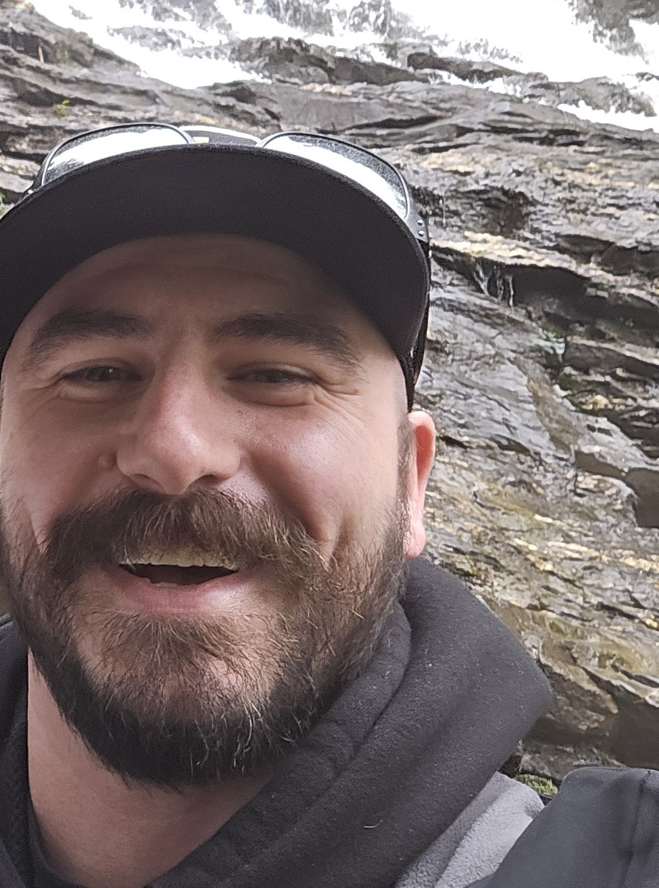

Randy Whitmore
Founder & Owner-Operator
I started 23 Timber because landowners in New England deserve someone who looks at the whole picture. A forester thinks about timber. A hunting consultant thinks about food plots. A logger thinks about what's coming down today. Nobody is thinking about how all of it connects, or what the property looks like in thirty years because of decisions being made right now.
I've spent thirty years hunting this ground and a career managing complex construction projects: coordinating specialists, sequencing work, and making sure decisions made early don't create problems later. That's exactly what good land management requires.
The goal is always the same: leave the land better than you found it, and leave the owner with something worth passing down.
Credentials & training
- ISA Certified Arborist® — NE-373321A
- FAA Part 107 Remote Pilot License
- GIS Certification / ArcGIS Pro
- Commercial Pesticide Applicator (MA) (NH)
- Wildland Fire — S-130 / S-190
- Hoisting License (MA)
- OSHA 30
- General Liability — NEXT Insurance
Credential No. NE-373321A — Valid through June 2029
Issued by the International Society of Arboriculture, ANAB-accredited personnel certification body #0847.
How he works
I grew up around equipment, small farms, and woods that had stories in them if you knew how to read them. That didn't translate into a plan right away. It took years of hunting, burning, planting, and making mistakes on real ground before the pieces connected into something useful.
What I'm not interested in is drive-by consulting. I'd rather walk your land, understand what you actually have, and tell you what I think, including the parts that aren't what you were hoping to hear. That's the only version of this work that holds up.